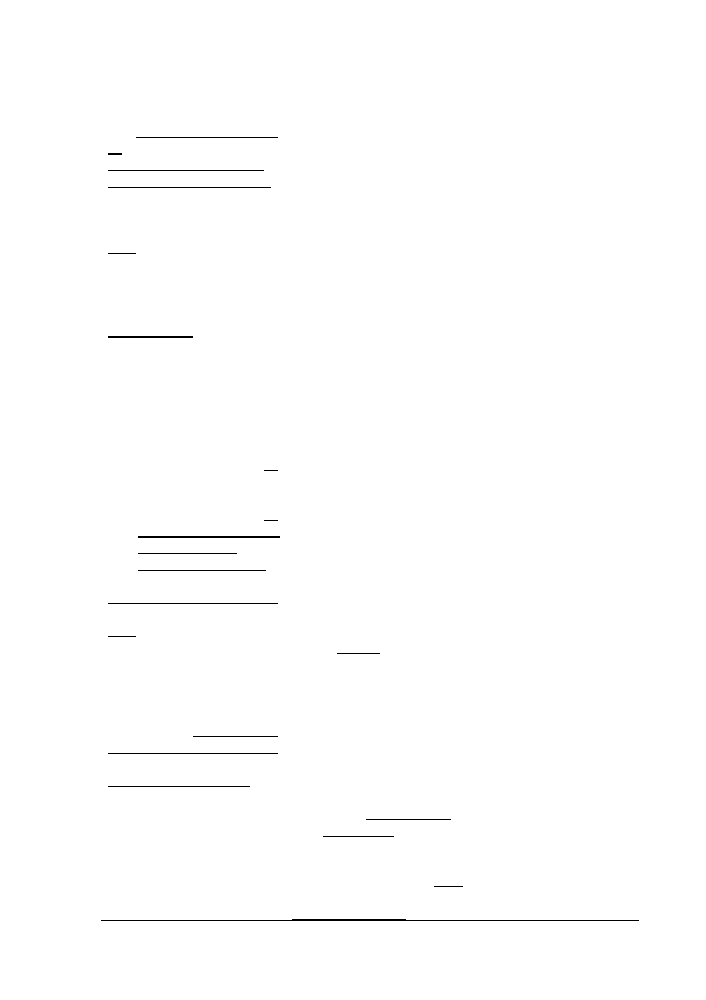

新計畫
肆、計畫目標與規劃構想
一、計畫目標
(一)社會福利設施更新與轉
型，建構完整之照顧服務系
統。
(二)配合推動公營住宅政
策，健全住宅租賃市場。
(三)朝大眾運輸導向規劃，
並配合捷運信義線東延段設
站，順暢交通動線系統。
(四)促進土地有效利用，帶
動地區整體發展。
(五)配置地區性公共設施，
提升地區生活環境品質。
(六)引進商業設施，提供鄰
里性商務需求。
二、規劃構想
(一)社會福利設施用地－提
供銀髮族、身心障礙
者、一般社會大眾所需
福利服務。
維持廣慈博愛院及福
德平宅既有社會救助功能，
照顧老人及身心障礙者，並
提供相關福利服務設施，提
供市民運動休憩場所。
(二)社會福利設施用地－規
劃公營住宅，滿足市民
基本居住需求。
配合本市推動公營住
宅政策，增加住宅供給並提
升居住品質，滿足市民居住
需求。
(三)公園用地－滿足地區休
憩需求。
臨近福德街與福德街
84巷側配置公園用地，提供
週邊地區居民休閒活動空
間。並得以多目標方式設置
地下停車場。惟實際設置數
量及期程得視周邊停車供需
情形併周邊商業區、社會福
利設施用地檢討設置。
(四)商業區－提供鄰里性商
務需求。
於福德街與大道路交
口處配置商業區，提供周邊
地區日常商務需求設施。
原計畫
說明
肆、計畫目標與規劃構想 1.配合社會福利設施之規
一、計畫目標
劃，修正相關文字。
(一)社會福利設施更新與轉 2.考量公有土地有效利
型，建構銀髮園區。
用，並落實推動公營住
(二)朝大眾運輸導向規劃， 宅政策，新增本案計畫
並配合捷運信義線東延段設 目標內容。
站，順暢交通動線系統。 3.因商業區、社會福利設
(三)促進土地有效利用，帶 施用地係修正採分別開
動地區整體發展。
發，故修正相關文字。
(四)配置地區性公共設施， 4.修正條次。
提升地區生活環境品質。
(五)引進商業設施，促使社
會福利事業自償經營。
二、規劃構想
1.為保留後續規劃彈性，
(一)社會福利設施用地－提 修正社會福利設施規劃
供銀髮族、身心障礙者 構想文字。
及一般社會大眾所需 2.配合公營住宅推動之計
福利服務。
畫目標，新增於社會福
維持廣慈博愛院及福 利設施用地規劃公營住
德平宅既有社會救助功能， 宅相關構想。
照顧老人及身心障礙者，並 3.本計畫停車位之提供係
設置廣慈文物館及活力健康 以滿足基地及地區停車
區，提供市民運動休憩場
需求為主，未來社會福
所，相關政策說明詳附件
利設施用地、商業區開
二。
發後所設置之部分停車
位亦可供地區使用，爰
增加後續開發彈性，得
視周邊停車供需情形調
整實際停車設置數量及
期程，或提出替代計畫
(二)公園用地－滿足地區休 等方式辦理。
憩與停車需求。
4.因商業區、社會福利設
臨近福德街與福德街 施用地修正採分別開
84巷側配置公園用地，提供 發，故刪除部分構想內
週邊地區居民休閒活動空
容。
間，並以多目標方式設置地 5.配合本府公營住宅政
下停車場，提供500個小汽車 策，在周邊道路服務水
位、500個機車位供週邊地區 準、停車需求等可負荷
居民使用。
之前提下，參酌原機關
用地開發強度之規定進
(三)商業區－提供鄰里性商 行後續開發，後續並將
務需求並挹注社會福 配合修訂相關細部計畫
利設施財源。
土地使用分區管制規
於福德街與大道路交 定，爰刪除原主要計畫
口處配置商業區，提供周邊 有關降低整體開發強
地區日常商務需求設施，並 度，比照鄰近第三種住
藉由商業區之開發促進社會 宅區容積率進行總量管
福利事業永續經營。
制之規劃構想文字。
-9-